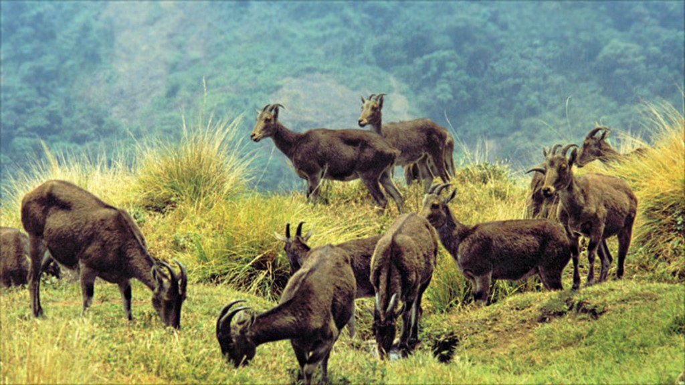

Eravikulam National park
A paradise full of rre varieties of flora and fauna,
the Eravikulam National Park is hom to Nilgiri tahr, a specied of mountain goat currently
listed as endangered by the International Union for Conservation of Nature.
Around one-third of the...